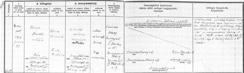

Maria Novak
b. 1874
Life events
| Born | 10 Sep 1874 · Dunaföldvár, Tolna, Hungary Map |
|---|---|
| Christened | 10 Sep 1874 · Dunaföldvár, Tolna, Hungary Map |
| Married | 30 Jun 1919 · Heinrich Blau · Budapest, Hungary Map |
| Divorced | 9 Apr 1921 · Heinrich Blau · Budapest, Hungary Map |
Family
Maria Novakb. 1874

Heinrich Blau1882–1937
Photos
Heinrich Blau
Maria Novak